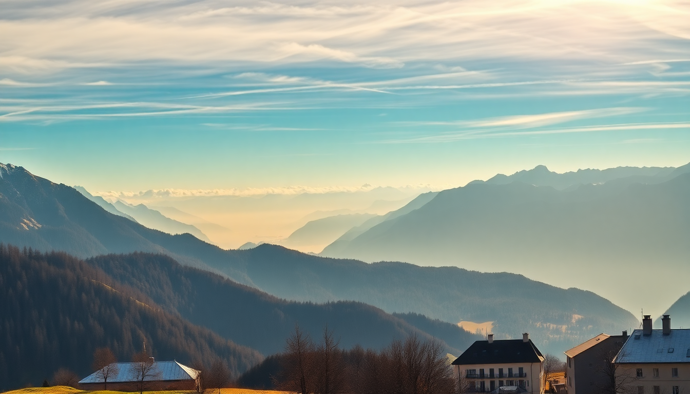

Swiss Alps: Best Time for Skiing vs Hiking Trips

I’ve been going back to the Swiss Alps for years, and the single biggest mistake I see people make is showing up in the wrong season for what they actually want to do. Skiing in July? You’ll find one glacier run and a whole lot of mud. Hiking in January? Trails are buried under two meters of snow. This guide breaks down exactly when to go to Zermatt, Interlaken, and St. Moritz based on whether you’re chasing powder or alpine trails.
When is the best time to ski in the Swiss Alps?
For reliable snow and open runs, aim for mid-December through early April. I’ve skied Zermatt in late November and scraped over rocks; I’ve also hit waist-deep powder there in mid-January. The sweet spot is January through March, when most resorts have full coverage and daylight is long enough for a solid day on the mountain.
- Zermatt – Runs from late November to early May. The Cervino area and glacier at Klein Matterhorn keep snow even in lean years. Best skiing: January to March.
- Interlaken – You’re not skiing in town. Head to Grindelwald or Wengen for the Jungfrau region. Season runs December to April, with peak conditions February through March.
- St. Moritz – High altitude (1,800m) means reliable snow from December to April. The Corviglia and Diavolezza areas are excellent in February.
One thing I’ve learned: avoid Christmas and New Year’s week unless you love lift queues and paying €12 for a hot chocolate. Mid-January is quieter and the snow is often better.
When is the best time to hike in the Swiss Alps?
Hiking season is short and specific: late June to mid-October. Trails above 2,000 meters don’t clear until July, and by late October, snow starts creeping back. I’ve done the Eiger Trail in early July and still hit patches of ice. For the best balance of dry trails and open mountain huts, go in August or September.
- Zermatt – Trails around the Five Lakes Walk and Gornergrat are usually open by late June. September is gorgeous—crisp air, fewer crowds, and golden larch trees.
- Interlaken – The Harder Kulm and Schynige Platte trails are accessible from June. The Lauterbrunnen Valley hikes are lower and open earlier, but the high stuff like Mürren to Schilthorn is best from July.
- St. Moritz – The Corviglia to Muottas Muragl loop is a classic. I’d aim for late August or early September—the weather is stable, and the trails aren’t packed with families.
A practical tip: check the Swiss Railways (SBB) website for trail status before you book. Some high routes don’t open until mid-July.
Can you ski and hike on the same trip?
Only in the shoulder months, and it’s not ideal. In late April or early May, you can ski the glacier in Zermatt in the morning and hike a low-altitude trail in the afternoon. But the skiing is limited to one area, and the hiking trails are often muddy or closed above 1,500 meters. I tried this in May near Pontresina and ended up with a sunburned face and wet boots. If you want both, plan two separate trips.
What about weather and crowds in each season?
Weather is the wildcard. In winter, expect temperatures between -5°C and -15°C at altitude, with frequent fog in the valleys. In summer, it’s 15°C to 25°C in the valleys, but thunderstorms roll in almost every afternoon above 2,000m. I always pack a shell jacket, even in August.
- Winter crowds – Zermatt and St. Moritz get busy over Christmas and February school holidays (European ski breaks). Interlaken itself is quieter, but the Jungfrau trains are packed.
- Summer crowds – August is peak. Interlaken feels like a theme park. Zermatt is busy but spread out. St. Moritz is calmer—more space on the trails.
If you hate crowds, go to Celerina instead of St. Moritz (same snow, half the price) or hike the Pontresina side of the Engadin valley.
Which Swiss resort is best for beginners vs. experts?
This matters more than timing. I’ve seen beginners on the black runs at Zermatt because they didn’t know better. Here’s how they break down:
- Zermatt – Best for intermediates and experts. The Rothorn area has long reds, but the Cervino side is steep and icy. Beginners have a small zone at Sunnegga, but it’s limited.
- Interlaken region – Grindelwald-First is great for beginners and families. Wengen and Mürren have wide blues. Experts should head to Lauterbrunnen for off-piste.
- St. Moritz – Strong for intermediates. Corviglia has endless reds. Beginners do well at Diavolezza (yes, it’s high, but the blues are gentle). Experts go to Piz Nair for steep couloirs.
For hiking, Zermatt’s trails are more challenging (steep, rocky). Interlaken has easier valley walks. St. Moritz offers flat lakeside paths and high-alpine routes.
What is the cheapest time to visit the Swiss Alps?
Switzerland is expensive any time, but you can save money by going in the shoulder seasons. Late April to early June (spring) and late October to early December (fall) offer lower hotel rates and fewer tourists. The catch? Skiing is limited to glaciers, and hiking trails are mostly closed. I stayed at Hotel Schweizerhof in Zermatt in early June for half the peak summer price, but the Gornergrat train was the only thing running.
- Cheapest winter – Early December (before Christmas) and late March (after spring break).
- Cheapest summer – Late June (before school holidays) and mid-September (after families leave).
Avoid the Engadin region in August—St. Moritz prices triple for the marathon and polo events.
FAQ
Can you ski in Zermatt in the summer? Yes, but only on the Theodul Glacier above Klein Matterhorn. The run is a single red slope, open from 8 AM to 1 PM. It’s fun for a novelty day, but it’s not a ski vacation. I did it in July once and was bored by lunch.
Is Interlaken good for hiking in April? Not really. The valley floor trails around Lake Brienz and Lake Thun are walkable, but anything above 1,000 meters is snow-covered or muddy. You’ll want crampons for the Harder Kulm trail. Better to wait until June.
Do you need a car to explore the Swiss Alps for skiing or hiking? No, and I’d advise against it. The Swiss rail system (SBB) connects all resorts. From Interlaken, trains go to Wengen, Mürren, and Grindelwald. Zermatt is car-free. St. Moritz has the Bernina Express. Buy a Swiss Travel Pass for unlimited trains and cable cars—it pays for itself in three days.
Conclusion
- Ski from January to March for the best snow at Zermatt, Interlaken (Grindelwald/Wengen), and St. Moritz.
- Hike from July to September for dry trails and open mountain huts—August is peak, September is quieter.
- Avoid Christmas, February school breaks, and August for lower crowds and prices.
- Use the Swiss rail system and stay in car-free Zermatt or train-connected Interlaken and St. Moritz.
- If you want both skiing and hiking, book separate trips—the shoulder seasons don’t deliver either well.